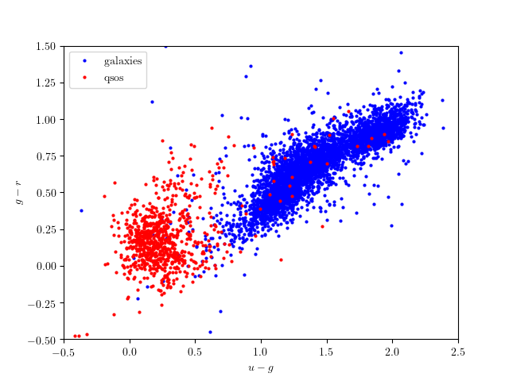
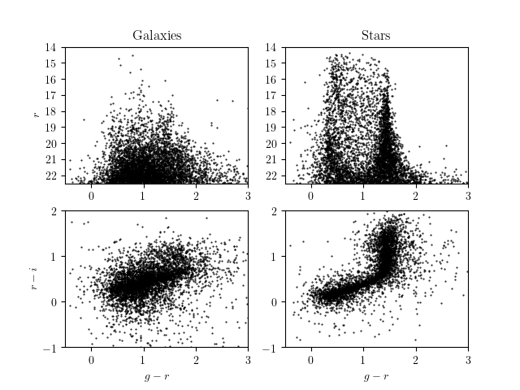
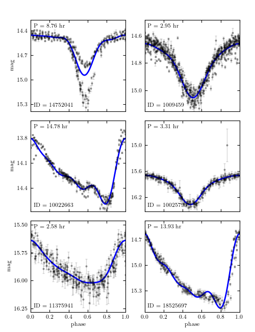

3. Data Sets¶
One of the major components of astroML is its tools for downloading and working with astronomical data sets. The available routines are available in the module astroML.datasets, and details are available in the documentation of the functions therein. In this section we will summarize some of the data sets made available by the code, and show some visualizations of this data
3.1. Data Set Cache Location¶
The total size of the data sets is in the hundreds of megabytes, too large to be bundled with the astroML source distribution. To make working with data sets more convenient, astroML contains routines which download the data from their locations on the web, and cache the results to disk for future use.
For example, the fetch_sdss_spectrum() function queries the SDSS database using an SQL query, and retrieves the data. The file is stored to disk in a location that can be defined by the user. The default location is ~/astroML_data, and this default can be overridden by setting the ASTROML_DATA environment variable. Any subsequent time the same function is called, the cached version of the data is used automatically.
3.2. SDSS Data¶
Much of the data made available by astroML comes from the Sloan Digital Sky Survey (SDSS), a decade-plus photometric and spectroscopic survey at the Apache Point Observatory in New Mexico. The survey obtained photometry for hundreds of millions of stars, quasars, and galaxies, and spectra for several million of these objects. In addition, the second phase of the survey performed repeated imaging over a small portion of the sky, called Stripe 82, enabling the study of the time-variation of many objects.
SDSS photometric data are observed through five filters, u, g, r, i, and z. A visualization of the range of these filters is shown below:

3.2.1. SDSS Spectra¶
The SDSS spectroscopic data is available in a database, indexed by three numbers: the plate, date, and fiber number. The fetch_sdss_spectrum() takes a plate, mjd, and fiber, and downloads the spectrum to disk. The spectral data can be visualized as follows:

As with all figures in this documentation, clicking on the image will link to a page showing the source code used to download the data and plot the result.
3.2.2. SDSS Photometry¶
Similarly to the spectroscopic data, the photometric data can be accessed directly using the SQL interface to the Database Archive Server. astroML contains a function which accesses this data directly using a python SQL query tool. The function is called fetch_sdss_galaxy_colors() and can be used as a template for making custom data sets available with a simple Python command. Some of the results are visualized below:
3.2.3. SDSS Corrected Spectra¶
The SDSS spectra come from galaxies at a range of redshifts, and have sections of unreliable or missing data due to sky absorption, cosmic rays, bad detector pixels, or other effects. AstroML provides a set of spectra which have been moved to rest frame, corrected for masking using an iterative PCA reconstruction technique (see Example of downloading and processing SDSS spectra), and resampled to 1000 common wavelength bins. The spectra can be downloaded using fetch_sdss_corrected_spectra(); some examples of these are shown below:
These data are used in several of the example figures from Chapter 7: Dimensionality and its Reduction.
Because these spectra are meant to enable high-dimensional classification and visualization routines, it is useful to have some extra classification data for these objects. One set of features available in the data set is the line ratio measurements. These can be visualized as shown below:
3.2.4. SDSS Spectroscopic Sample¶
Along with spectra, SDSS catalogued photometric observations of the objects in the survey area. Those objects with both spectra and photometry available provide a wealth of information about many classes of objects in the night sky. The photometry from the SDSS spectroscopic galaxy sample is available using the routine fetch_sdss_specgals(), and some of the attributes are shown in the following visualization:
One well-known feature of the SDSS spectroscopic sample is the “great wall”, a filament of galaxies located several hundred megaparsecs away. The great wall data is among the spectroscopic sample: to enable easily working with it, astroML contains the function fetch_great_wall(). The data can be seen below:
3.2.5. SDSS DR7 Quasar Catalog¶
The SDSS has obtained the spectra of over 100,000 distant quasars. The quasar catalog is described on the SDSS website, and can be downloaded using the function fetch_dr7_quasar(). Some of this quasar data is used in the visualization below:

3.2.6. SDSS Imaging Sample¶
While the spectroscopically observed objects in SDSS offer a large number of measured features for each object, the total number of observed objects of each class (star, galaxy, quasar) is under one million. The full photometric sample goes much deeper, and thus contains photometric measurements of hundreds of millions of objects. astroML has a function called fetch_imaging_sample() which loads a selection of this data. Some of the returned attributes are visualized below:
3.2.7. SDSS Segue Stellar Parameters Pipeline¶
Several groups have produced various value-added catalogs which contain additional observed features for objects in the SDSS database. One example is the Segue Stellar Parameters Pipeline (SSPP), which makes available a large number of additional object features derived from SDSS photometry and spectra. This data can be downloaded using the function fetch_sdss_sspp(). Some of the metallicity and temperature data is visualized below:

The left panel shows the density of point on the temperature / log(g) plot. These parameters correlate with the familiar HR diagram based on photometric colors. The right panel shows the average metallicity in each pixel, and the contours indicate the density of points. Many more attributes are available in the SSPP data set; see the fetch_sdss_sspp() documentation for details.
3.2.8. Stripe 82: Time Domain¶
During the second phase of the SDSS, the project repeatedly surveyed a small swath of sky known as Stripe 82. This yielded an unprecedented set of data in the time domain, which yielded insight into phenomena as wide-ranging as the orbits of asteroids, the variability of certain classes of stars, and the acceleration of the expansion of the universe.
astroML contains two datasets based on Stripe 82 data: one containing observations of RR-Lyrae stars, and one containing observations of moving objects (i.e. asteroids) within the solar system.
The RR-Lyrae data can be obtained using the fetch_rrlyrae_mags() function, and result in the dataset visualized below:
The moving objects can be obtained using the fetch_moving_objects() function, giving a dataset containing not only photometric observations, but also orbital parameters. A portion of this information went into the following visualization:


3.2.9. Stripe 82: Standard Stars¶
Along with time-domain data, the repeated observations in Stripe 82 enabled stacked photometry of sources to minimize the statistical error in their measured fluxes. The Stripe 82 standard stars are a set of stars in this region which are below a specified variability criterion. The multiple exposures were combined to yield a highly precise catalog of stars. This data can be obtained using the fetch_sdss_S82standards() function. Some of the data in this catalog is visualized below:
3.3. Combined Surveys¶
3.3.1. Nasa Sloan Atlas¶
The NASA Sloan atlas is a cross-matched catalog of observations and parameters for nearby galaxies, compiled from SDSS, GALEX, 2MASS, annd WISE. The full dataset is ~500MB; an astroML dataset loader for ~50MB of this data is available in fetch_nasa_atlas(). The footprint of the available data can be seen below:

3.3.2. Stripe 82 Standards + 2MASS¶
Above, we introduced the stripe 82 standard star catalog. There is also a version of this catalog which is cross-matched with the 2 Micron All Sky Survey (2MASS) data. This can be obtained using the fetch_sdss_S82standards() function, with the keyword crossmatch_2mass=True. Some of the combined data are shown below:

3.4. Time Domain Data¶
3.4.1. RR Lyrae Templates¶
RR Lyrae light curve templates can be useful when analyzing time-series data. The function fetch_rrlyrae_templates() fetches the templates used in [1]. The following is a figure from the textbook that reconstructs one of these templates using a Fourier series:
The dashed line is the RR Lyrae template; the grey lines show the reconstruction with 1, 3, and 8 Fourier modes.
| [1] | Sesar et al 2010, ApJ 708:717 |
3.4.2. LINEAR Light Curves¶
The Lincoln Near Earth Asteroid Research (LINEAR) project, in existance since 1998, is designed to discover and track near-earth asteroids. Its archive contains several million images of the sky, and its combination of sensitivity and sky coverage has made it a valuable resource to study time-domain astronomy, including variable stars. astroML has two functions relating to the LINEAR sample: fetch_LINEAR_sample() fetches light curves for over 7000 variable stars. fetch_LINEAR_geneva() contains well-calibrated periods for a majority of these. Phased light curves for six of the LINEAR objects can be seen in the following figure. Here, the periods were found using a Lomb-Scargle periodogram.
See chapter 10 of the text for a discussion of the mismatched period seen in the upper left object.
3.4.3. LIGO data¶
The Laser Interferometer Gravitaional-Wave Observatory (LIGO) is an effort to use laser interferometry to measure the expansion and contraction of space predicted to be the result of gravitational waves passing by earth. It is an example of a regularly sampled time series with a very complicated noise frequency structure: this structure must be understood to a high degree. astroML contains two loaders for LIGO-related datasets. fetch_LIGO_large() fetches a large sample of LIGO data, useful for characterizing the background noise of the survey. fetch_LIGO_bigdog() contains the data associated with the Big Dog Event, a blind-injection test designed to measure the response of the instrument and the survey team to a potential signal. The figure below shows an example of using a Hanning filter to obtain the noise spectrum from the LIGO data:

3.5. WMAP temperature map¶
The WMAP project used a satellite to observed the details of the fluctuations in the cosmic microwave background, and during the last decade has led to unprecedented and ever-improving constraints on fundamental constants of the universe. astroML contains a loader of the WMAP data, using the routine fetch_wmap_temperatures(). Using the healpy package, we can visualize the raw WMAP data:


healpy also has some routines for computing fast spherical harmonic transforms. A rigorous treatment involves correcting for the mask pattern seen in the right image. Neglecting this correction, a simple power spectral analysis can be performed using the tools in healpy: